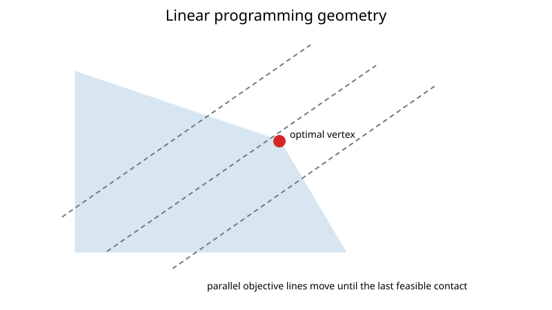

Linear Programming
A linear program optimizes a linear objective over linear constraints. A common minimization form is
$$ \min_x c^\top x $$
subject to
$$ Ax\le b, \qquad x\ge0. $$
The feasible region is a polyhedron.
Why vertices matter
For a feasible linear program in the nonnegative-variable form above, an attained finite optimum has an optimal extreme point. The unrestricted statement needs care: a polyhedron containing lines may have no vertices, even when a finite optimal value is attained. In two dimensions these are polygon vertices.

The objective contours
$$ c^\top x = \gamma $$
are parallel hyperplanes. Moving them in the improving direction until they last touch the feasible region reveals the optimum geometrically.
Slack variables
An inequality
$$ a_i^\top x\le b_i $$
can be rewritten as
$$ a_i^\top x + s_i = b_i, \qquad s_i\ge0. $$
Slack variables convert the inequalities into equalities while measuring unused capacity.
Simplex idea
The simplex method maintains a basis corresponding to a basic feasible solution and moves between adjacent vertices.
For minimization, reduced costs indicate whether introducing a nonbasic variable can improve the objective. If all reduced costs satisfy the optimality sign convention, the current basis is optimal.
A ratio test chooses the leaving variable so that feasibility is preserved.
Reduced costs and the ratio test
In equality standard form $A_Bx_B+A_Nx_N=b$, choose an invertible basis matrix $B=A_B$ and set the nonbasic variables to zero. The basic point is feasible when $x_B=B^{-1}b\geq0$. Increasing nonbasic variable $x_j$ by $\theta\geq0$ changes the basic variables to
$$ x_B(\theta)=B^{-1}b-\theta B^{-1}A_j. $$
The objective changes by $\theta\overline c_j$, where
$$ \overline c_j=c_j-c_B^\top B^{-1}A_j $$
is the reduced cost. For minimization, a negative reduced cost is an improving candidate. Let $d=B^{-1}A_j$. Feasibility requires $\theta\leq(x_B)_i/d_i$ wherever $d_i>0$; the minimum of these ratios identifies a leaving variable. If no component of $d$ is positive, that feasible direction permits unbounded improvement. A zero minimum ratio is a degenerate pivot and may change the basis without changing the point or objective.
These formulas use inverse notation to derive the relationships; implementations can obtain the quantities by factorization solves. Phase I is needed when an initial feasible basis is unavailable, because the ratio test preserves existing feasibility rather than creating it from an arbitrary point.
Unboundedness and infeasibility
A correct LP solver must distinguish:
- optimal: a feasible point achieves the best finite value;
- unbounded: feasible points can improve the objective without limit;
- infeasible: no point satisfies all constraints.
The repository's linear_programming implements the two-phase simplex method for
$$ \min c^\top x\quad\text{s.t.}\quad A_{\text{ub}}x\le b_{\text{ub}},\; A_{\text{eq}}x=b_{\text{eq}},\; x\ge0. $$
A constraint $a^\top x\ge\beta$ is passed as $-a^\top x\le-\beta$.
- Phase I. Rows whose slack variable cannot start in the basis (negative right-hand side after adding slacks, or equalities) get an artificial variable $t_i\ge0$. Phase I minimizes $\sum_it_i$. If the optimum is positive, no feasible point exists and a
ValueError("infeasible") is raised. Otherwise the final basis is a basic feasible solution; artificial variables left in the basis at level zero are pivoted out, and rows that are linear combinations of others are dropped. - Phase II. The original objective is priced out against that basis and ordinary simplex pivots run. If an entering column has no positive entry, the problem is unbounded and a
ValueError("unbounded") is raised.
Pivoting uses Dantzig's most-negative-reduced-cost rule and switches to Bland's smallest-index rule after a run of degenerate pivots to avoid cycling. Results agree with scipy.optimize.linprog on randomized test problems with mixed-sign right-hand sides. It remains a dense-tableau teaching solver, not a production code.
Worked example
Maximize
$$ 5x_1 + 4x_2 $$
subject to
$$ 2x_1 + x_2\le8, $$
$$ x_1 + 2x_2\le7, $$
$$ x_1,x_2\ge0. $$
The boundary intersection solves
$$ 2x_1 + x_2 = 8, $$
$$ x_1 + 2x_2 = 7, $$
which gives
$$ (x_1,x_2) = (3,2). $$
The objective value is
$$ 5(3) + 4(2) = 23, $$
larger than at the other feasible vertices.
The other vertices are $(0,0)$, $(4,0)$, and $(0,3.5)$, with values $0$, $20$, and $14$. A dual certificate also proves optimality without enumerating vertices: multiply the first inequality by $2$ and the second by $1$. Adding gives $5x_1+4x_2\leq2(8)+7=23$, attained at $(3,2)$. To pass this maximization to a minimization interface, use objective vector $c=(-5,-4)$.
Numerical notes
Degeneracy can produce zero-length pivots and cycling. Real solvers use anti-cycling rules, presolve, scaling, sparse linear algebra, and often dual-simplex or interior-point variants.